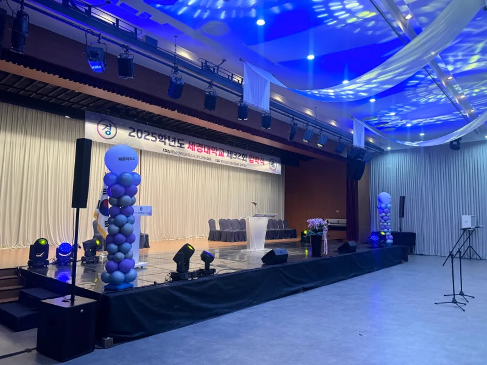
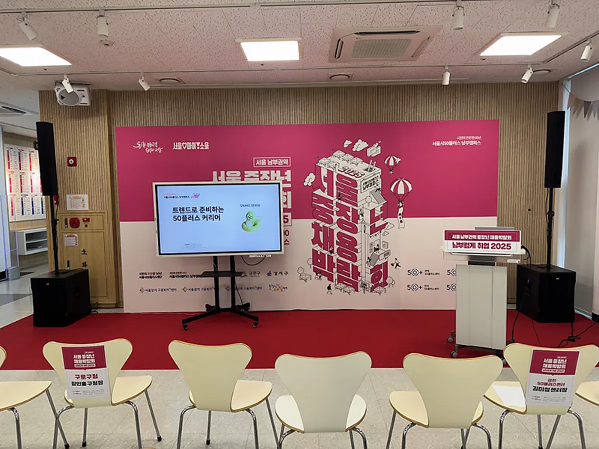

강서 간담회 레크리에이션은 원탁에 앉은 채로 모두가 참여할 수 있는가가 핵심입니다. 기관 간담회는 어르신부터 아이를 데려온 보호자까지 함께 오는 자리라, 몸을 크게 쓰는 게임보다 테이블에서 하는 게임과 무대 순서를 섞는 편이 잘 맞습니다. 프로이벤트는 강서가족지원센터 송년회 (2026)를 맡았고, 서울 본사에서 강서구청까지는 차로 약 25분 · 22.2km 입니다. 그 현장 기준으로 기관 행사의 순서와 준비물을 정리했습니다.

- 기관 간담회는 보고 · 의견 나누기 같은 공식 순서와 레크리에이션을 앞뒤로 나눠 배치합니다.
- 원탁 배치에서는 자리에서 할 수 있는 테이블 게임 · 퀴즈 · 미션이 중심입니다.
- 여러 연령이 함께 오므로 규칙은 짧고, 화면과 진행자 말로 두 번 안내합니다.
- 연회장 원탁은 뒷자리까지 소리가 고르게 닿도록 스피커를 나눠 둡니다.
1. 강서 간담회 레크리에이션, 공식 순서와 나눠서
간담회에는 기관장 인사, 한 해 활동 보고, 이용자 의견 나누기, 감사패 같은 공식 순서가 있습니다. 이 순서 중간에 레크리에이션을 끼워 넣으면 분위기가 계속 바뀌어 양쪽 다 어수선해집니다. 1부 공식 순서, 2부 레크리에이션처럼 크게 나누고, 사이에 식사나 다과를 두는 편이 깔끔합니다.
| 순서 | 내용 | 시간 |
|---|---|---|
| 1부 여는 순서 | 개회 · 기관장 인사 · 활동 영상 | 20분 |
| 1부 이야기 순서 | 활동 보고 · 이용자 의견 나누기 | 30분 |
| 1부 감사 순서 | 감사패 · 공로 시상 | 15분 |
| 식사 · 다과 | 배경 음악, 테이블 정리 | 40분 |
| 2부 레크리에이션 | 테이블 게임 · 퀴즈 · 미션 | 40분 |
| 마무리 | 경품 추첨 · 단체 사진 · 폐회 | 15분 |
2. 원탁에서 하는 테이블 게임
원탁 배치에서 모두를 일으켜 세우는 게임은 어르신이나 아이를 안은 보호자에게 부담이 됩니다. 테이블을 한 팀으로 묶어 자리에서 함께 푸는 게임이 잘 맞습니다. 레크리에이션 강사가 테이블 사이를 오가며 진행하면 뒤쪽 테이블도 소외되지 않습니다.
- 테이블 퀴즈: 기관 활동 · 지역 상식 · 음악 맞히기를 화면에 띄우고 테이블별로 답판을 듭니다.
- 테이블 미션: 제한 시간 안에 테이블 전원이 함께 해내는 과제(물건 모으기 · 박수 리듬 맞추기)를 냅니다.
- 대표 한 사람 무대 순서: 테이블마다 한 사람만 무대로 나와 짧은 게임을 합니다.
- 경품 연결: 게임 점수와 경품 추첨을 이어 끝까지 자리를 지키게 합니다.

3. 여러 연령이 함께할 때 진행 요령
기관 행사는 참가자의 나이와 사정이 다양합니다. 규칙이 길면 앞에서 설명하는 동안 뒤에서 대화가 시작됩니다. 규칙은 한두 문장으로 줄이고, 진행자의 말과 화면 글자로 두 번 안내합니다.
| 상황 | 진행 요령 |
|---|---|
| 어르신 참가자 | 자리에서 하는 게임, 큰 글자 화면, 천천히 또렷한 진행 |
| 아이 동반 보호자 | 아이와 함께 하는 짧은 순서, 소리 큰 효과음 줄이기 |
| 처음 온 이용자 | 테이블 소개 순서로 시작해 어색함 풀기 |
| 휠체어 이용자 | 무대 · 출입 동선 경사로 확인, 무대 아래에서도 참여 가능한 방식 |
4. 연회장 음향과 화면
원탁이 넓게 퍼진 연회장에서는 무대 앞 스피커 두 개만으로 뒷자리까지 고르게 들리기 어렵습니다. 객석 크기를 보고 스피커를 앞뒤로 나누거나 높이를 올립니다. 화면은 무대 양옆에 두 개를 두면 어느 테이블에서든 하나는 보입니다. 프로이벤트는 음향 · 조명 · 무대 · LED 를 자체 장비와 자체 인력으로 세팅합니다.

- 무선 마이크: 진행자 · 기관장 · 의견 발표자용을 나눠 준비합니다.
- 배경 음악: 식사 · 다과 시간에는 대화가 들리는 크기로 낮춥니다.
- 화면: 순서표 · 퀴즈 · 수상자 이름을 미리 파일로 받아 리허설 때 확인합니다.
5. 강서 기관 행사 준비 순서
강서(마곡 · 화곡동 · 등촌동 · 가양동 · 발산동 · 강서구청 등)의 행사장까지 서울 본사에서 차로 약 25분 · 22.2km 입니다. 기관 행사는 결재와 예산 확정에 시간이 걸리므로, 견적과 구성안을 먼저 받아 내부 보고에 쓰는 순서를 권합니다.
- 5주 전: 날짜 · 장소 · 대상 · 예산 범위 정리, 견적과 1차 제안 받기.
- 4주 전: 내부 결재, 계약(전자계약서 가능).
- 2주 전: 순서표 · 감사패 명단 · 퀴즈 문제 확정.
- 사흘 전: 참석 인원 · 도움이 필요한 참가자 · 경품 목록 확정.
- 당일: 세팅 → 리허설 → 1부 · 2부 진행 → 철수 · 사진 정리 · 결과 보고.
6. 간담회 견적 항목표
자동 견적서에서 항목을 골라 보내 주시면 담당자가 확인 후 1영업일 안에 1차 제안과 견적으로 답합니다. 금액은 장소 · 인원 · 구성에 따라 달라 상담 때 안내합니다.
| 항목 | 확인할 것 |
|---|---|
| 관공서행사(간담회 기획 · 진행) | 순서 구성 · 현장 운영 |
| 레크리에이션 강사 | 테이블 게임 · 퀴즈 진행 |
| 음향 (중형) | 원탁 수 · 객석 크기 |
| 무선 마이크 추가 | 의견 발표 · 시상 |
| LED 전광판 | 순서표 · 퀴즈 화면 |
| 행사 스태프 | 안내 · 경품 · 동선 도움 |
강서 지역 안내는 강서 행사 안내에 있습니다. 연말 모임을 기업 송년회 형식으로 준비한다면 강남 송년회 행사 글도 참고하세요.
자주 묻는 질문
기관 행사도 계약서를 쓰나요?
전자계약서로 계약할 수 있습니다. 견적서와 계약 내용이 같은 항목으로 이어집니다.
2부 레크리에이션만 맡길 수 있나요?
1부는 기관에서 진행하고 2부 레크리에이션만 맡기는 구성도 상담할 수 있습니다.
참가자 나이가 다양해도 괜찮을까요?
자리에서 하는 테이블 게임 위주로 짜고, 규칙을 짧게 두 번 안내하면 여러 연령이 함께 참여하기 좋습니다.